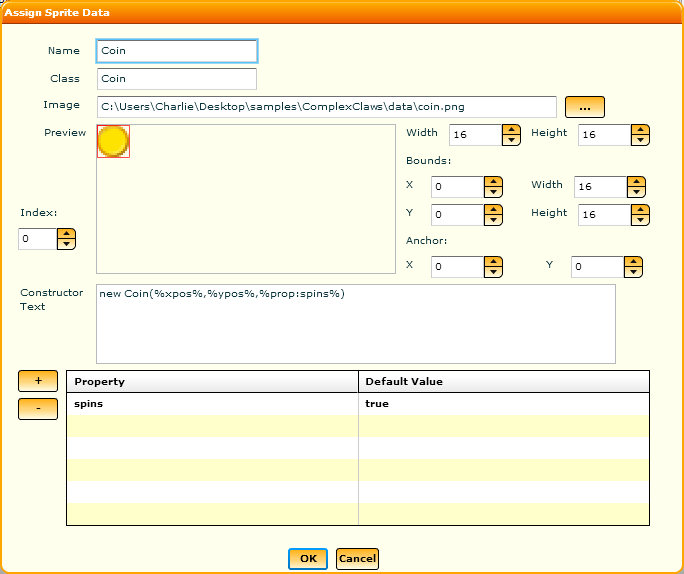
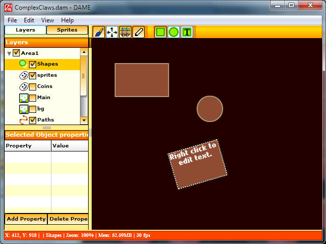
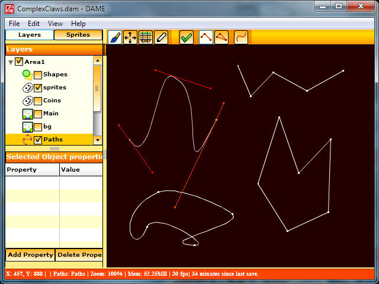

Return to help contents...
Editing objects in DAME
Click on the links below to learn more about editing the different types of object DAME supports:
To place sprites down first ensure you have a sprite layer selected in your layers panel. To add a sprite layer either right click on the panel and select Add->New Sprite Layer or Add->New Group with the sprite layer tickbox selected in the popup window. Once you have your layer select it by left clicking on the layer.
The next thing you need is a sprite to work with. There are two types of sprites supported by DAME:
- Animated Sprites - These are used for any animated sprite where the size of all frames within the sprite animations is the same.
- Tile Sprites - These are often used for static sprites where the textures index into a bigger spritemap image file containing many different images.
To paint with a sprite ensure that you have the paint brush icon selected on the toolbar, a sprite layer is selected and a sprite is selected. To select a sprite click on the Sprites button on the top left to switch from the Layers panel to the Sprite panel and click on a sprite within the tree view. If you need to add a sprite then right click to add one ( You can also set up the sprite hierarchy by adding folders and placing sprites within them. )
It is possible to paint sprites continuously rather than one at a time. To do this you must have the grid snapping enabled through Edit menu->Guides and selecting "Paint Sprites Continuously" in Edit menu->Guides->Modify. Once this is done sprites can be painted by holding down the left mouse button. They will only be drawn if there is no sprite in the new location (this does not account for sprites that are offset from the grid lines).
-
Animated Sprites - An animated sprite is set up like a tilemap, with regularly spaced, same-sized images within a bitmap. While its primary use is to place animated, or even non-animated, sprites on a level it can be also be used to create a tilemap where the tiles are not placed at regular locations on the map.
Select "Add Anim Sprite" from the sprite panel menu and you will be presented with this window (which is also available when you select "Edit Sprite" after right clicking on an anim sprite. )

To select an image click on the "..." button and choose an image file. DAME will make a guess about the size of each frame and fill out the width and height values for you, which you can change. The "index" control lets you select the image index to use for the preview. You can modify the index used on a per object basis. See below.
The bounds controls let you control the size of the box to use for hits (it will be down to your game/exporter to handle this) and the anchor is the location to use for position/offset calculations. These will be represented by a red box on the preview and a red cross respectively.
The constructor text is there to override the default constructor provided in the exporter if relevant. Usually this will be a call to something like "new Sprite()" and your constructor text could override that by adding extra parameters, but if you are writing your own exporter you are free to interpret this as you choose.
The creation text is there to override the default creation text provided in the exporter if relevant. This could be the entire block of text for each sprite, including the constructor text.
Finally, there is a properties list. All objects when placed have their own set of properties and you can add a different set of properties for every instance of the same sprite. However, in the sprite entry you can specify the default properties for a particular type of sprite. If you do this then all sprites of this type will have these property entries listed, with the ability to override the values per sprite instance.
To modify the preview image of an anim sprite object, ensure you have the tile palette open. When you place sprites down the frame used will be the one currently selected in the tile palette, so changing the selected frame will change the frame used for future anim sprites.
-
Spritesheets - A spritesheet is used when you have a bitmap image that contains sprite images packed together, not necessarily regularly spaced. The area of a spritesheet
Select "Add Spritesheet" from the sprite panel menu and you will be presented with this window (which is also available when you select "Edit Sprite" after right clicking on a tile sprite. )

Spritesheets have a similar set of data to anim sprites with a couple of exceptions. You can specify the X and Y coordinates of the top left of the sprite's visible region and there is no preview index control. This allows you to fully control where this sprite is located within the image map. Other than that it's behaviour is exactly the same as an anim sprite.
You can modify the region of the spritesheet used on a per object basis, meaning that you only need to create one spritesheet per image file if you wish. To do this hold down the 'T' key to begin transforming. Holding T by itself allows you to move the region around within the sprite. Holding T while scaling the sprite using the transformation handles will scale the sprite without scaling the region inside.
Painting sprites down is done by clicking on the paintbrush icon on the toolbar and left clicking on an empty area, unoccupied by any sprites on the currently selected sprite layer. Ctrl-D will restore it to its original size and orientation. If Snap To Grid is enabled and you selected the option "Paint Sprites Continuously When Snapped" from the grid settings window then you can hold down the paint brush to paint one sprite wherever there is an empty grid space under the brush. ( Note that if there are sprites under the cursor that aren't aligned to the grid then there is no guarantee whether a continuous sprite will be drawn or not).
You can scale a sprite (or any other object) by clicking on the sprite and holding Alt, and rotate by holding R. This can also be done using the Handles around the edges of the sprite if you have the menu option "View->Rotation/Scaling Marquees" enabled. However, in each sprite's settings you can choose to disable the abilty to scale or rotate. This is purely a usability issue to prevent you from accidentally transforming a sprite that was never intended to be transformed. To do this, simply deselect the "Can Scale" and/or "Can Rotate" tickbox in the sprite's settings window.
With a shapes layer selected (add one if you need to) left click to place down a new shape. You can select the type of shape by clicking on the circle or box icons on the toolbar. You can also choose to create text ( covered in the next section ). Boxes can be fully scaled and rotated. However, circles can only be scaled uniformly. Ellipses are not supported. While shapes are not typically needed by a game directly, they can be very useful in embedding information in a specific area. E.g. by specifying properties on each shape appropriately you could create invisible shapes that trigger certain actions when a player enters certain areas.

Text is treated like a box shape and can be scaled and rotated. This allows you to get both the text information and the shape information if you wish to place a border around your text. To edit the text right click on the text box and select "Edit Text". Then edit the text string, formatting and style of the text as you choose. Currently you are restricted to system fonts only.
To edit paths ensure you have a path layer selected first. Next select the type of path you wish to create by selecting the desired combination of the following buttons on the toolbar:
- Select this to create a path where the two ends do not meet.
- Select this to create a closed polygon where the two ends meet.
- Select this to create a curved path, deselect to create a linear path.
To place down the path click somewhere to add a node. Each subsequent click on empty space will add a new node. Click on a node and drag to move the node around. If editing curves, clicking on a tangent handle will move the handle. Click on the green tick on the toolbar to confirm the node, allowing you to place a new path down.

You can scale and rotate paths, but the end result will simply move the nodes to their new position. In other words, after any transformations the scale and angle of a path will always be set to 1 and 0 respectively.
To change whether the path is open or closed after it has been placed you can select the relevant option from the path's context menu.
It is also possible to spawn an instance of this path by selecting the option on the context menu. What this will do is generate a duplicate path to the selected one that shares all the same path data. Then if you change a node on one path all other instances will automatically change with it.
Sprites can be attached to paths by right-clicking on the object and then selecting "Attach to path". Once this is selected you must select the path layer and then left-click on the path or drag select a box over the path. The sprite will then move relative to the path and follow it precisely based on the sprite anchor location. You can later detach it by selecting "Detach from path" by right clicking on the sprite again.
Links allow you to define a one-way relationship from one object to another. Right click on an object and select "Link To Another Object" from the popup menu. Now select the object you wish to link to (making sure you are on the correct layer first) and the link will be created.
Links will only show up on layers that contain objects that have those links. You can select links by left-clicking on them and add properties to the links or delete the links entirely by pressing the Delete key. When a link is selected a small box will move in the direction of the link from the source object to the target object.
The meaning of the links is entirely up to your own code. They can be used for triggering things when the player enters an area, or activating/deactivating by hitting a switch. It's up to you!